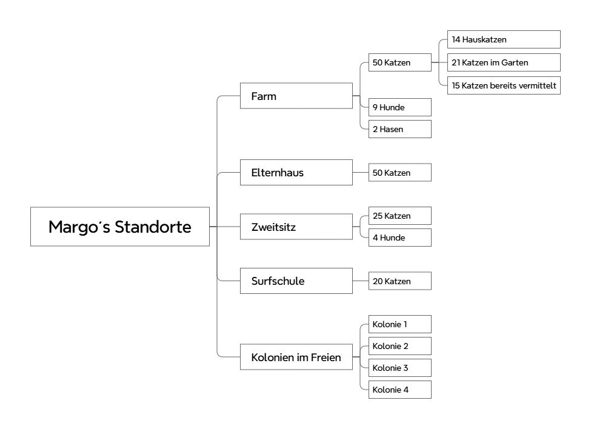

Das Tier zuerst
Jede Entscheidung beginnt mit der Frage: Was braucht diese Katze? Alles andere ordnet sich unter.
Was Margos Arbeit leitet, was sie bewirkt und wie wir sie tragfähig machen – hier ausführlich, gebündelt auf einer Seite.
Fünf Versorgungsbereiche, zahlreiche Tiere – das ist die Struktur hinter der täglichen Arbeit.

Jede Entscheidung beginnt mit der Frage: Was braucht diese Katze? Alles andere ordnet sich unter.
Tierschutz entscheidet sich im Alltag: füttern, behandeln, dokumentieren – jeden Tag, auch wenn niemand hinschaut.
Ehrliche Profile, geprüfte Familien, persönliche Freigabe durch Margo, Nachbetreuung inklusive. Ein Zuhause ist erst dann eines, wenn es bleibt.
Wir arbeiten eng mit Tierärzten und erfahrenen Partnerorganisationen zusammen – und dokumentieren jeden Gesundheitsschritt nachvollziehbar.
Kosten, Spenden, Entscheidungen: Alles wird festgehalten und ist nachvollziehbar. Vertrauen entsteht nicht durch Worte, sondern durch Einblick.
Aus einer Ein-Frau-Leistung wird eine Gemeinschaft: Paten, Pflegestellen, Übersetzer, Fahrer, Vereine – viele Schultern statt einer.
Sicherheit statt Straße
Gesundheit statt Zufall
Kastration statt endloser Vermehrung
Ein Zuhause statt Ungewissheit
Weniger erklären, mehr bewirken
Informationen haben endlich einen Ort
Aufgaben werden teilbar
Zeit und Kraft gehören wieder den Tieren
Ehrliche Profile statt Überraschungen
Begleitung vor und nach der Adoption
Eine Katze, deren Geschichte man kennt
Jeder Euro nachvollziehbar
Direkter Draht statt anonymer Spendentopf
Wirkung, die man sehen kann – Katze für Katze
Jede Kastration verhindert künftiges Leid, jede Vermittlung schafft Platz für die nächste Notlage – und jede dokumentierte Entscheidung zeigt: Der Tierschutz Einzelner kann zu einem System werden, das bleibt. Ein Modell, das Schule machen darf.
Unter dem Dach der Initiative entstehen fünf Entlastungssysteme. Zu jedem liegt ein ausgearbeitetes Konzept vor – hier zeigen wir offen, was jedes System bewirkt und wie weit wir sind.
Margo muss sich nicht ständig wiederholen.
Eine zentrale Wissensbasis für Tiere, Kosten, Partner und Abläufe – jede Information bekommt einen festen Platz statt in Chats und Erinnerungen zu liegen.
Weniger Katzen in ihrer Verantwortung.
Eine klare Pipeline von der Erfassung bis zur Nachbetreuung – gestartet wird mit den 20 Katzen, deren Vermittlung am schnellsten entlastet.
Weniger operative Abhängigkeit von Margo.
Klare Rollen, Entscheidungsregeln und ein fester Wochenrhythmus verteilen Verantwortung auf viele Schultern – ohne dass sie verschwindet.
Weniger Existenzdruck.
Kostenklarheit, Patenschaften, Partner und Transparenzberichte machen Unterstützung planbar – die wichtigste Kennzahl: Margos privater Anteil sinkt.
Mehr Menschen verstehen und unterstützen die Initiative.
Diese Website ist sein erster Baustein. Hier erscheinen künftig Fortschritte, Erfolgsgeschichten und monatliche Kurzberichte – ehrlich, regelmäßig, nachvollziehbar.
Woran wir in den ersten 30 Tagen arbeiten:
Stand: Juli 2026 · Fortschritte und Monatsberichte veröffentlichen wir an dieser Stelle.